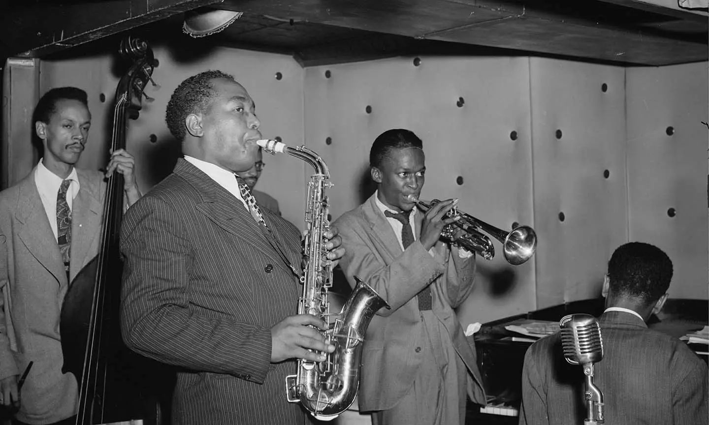

Tokenizzazione
Language appears in many ways. It can be understood as style: specific recognizable patterns of organized elements that form a subspace of the space of all possible configurations.
There is verbal and written language, shaped by words, grammar and narrative structure. For example, Oscar Wilde wrote:
“There is only one thing in life worse than being talked about, and that is not being talked about.”
There is visual language too: an image can communicate through color, composition, repetition, and arrangement of shapes. One famous instance is Georges Pierre Seurat’s painting The Seine by the island of Jatte.
There is also musical language: sound organized in time, with rhythm, melody, harmony and texture. Charlie Parker’s bebop is a clear example of music speaking in its own distinctive way.

